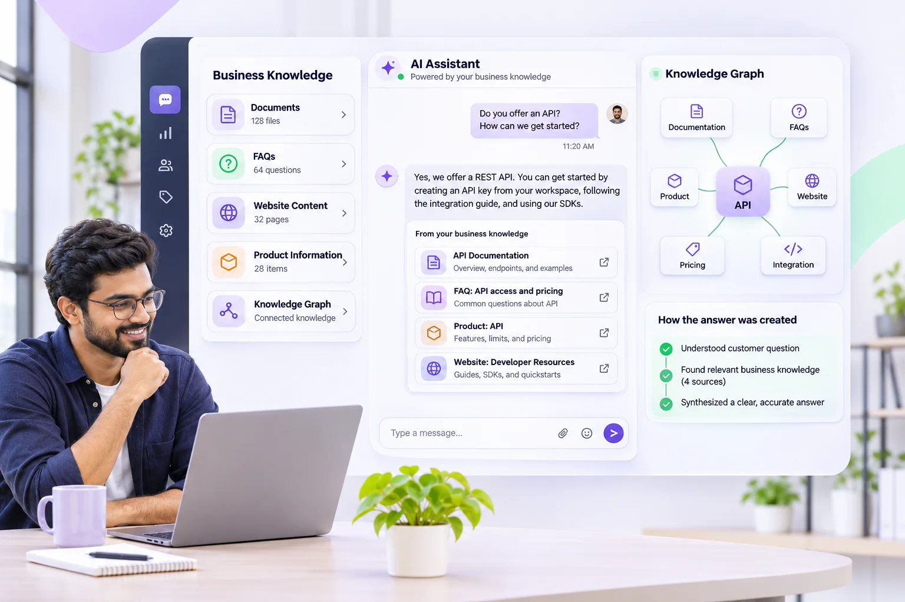

How business knowledge helps AI assistants answer better

An AI assistant is most useful when its responses are grounded in clear, current business information rather than generic guesses.
1. Collect trusted sources
FAQs, policies, product descriptions and support documentation make a strong starting point. Remove outdated or contradictory material.
2. Define what the assistant should do
Instructions should clarify the assistant's scope, tone and when it should ask for clarification or hand over to a team member.
3. Test realistic questions
Before enabling an assistant for customers, test common questions, edge cases and questions the knowledge base cannot answer.
4. Monitor and improve
Review response quality and update business knowledge as policies, services and offerings change. Automated answers should not replace human judgment in sensitive situations.